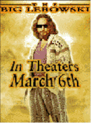
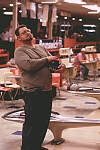
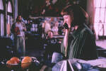

Contents | Features | Reviews | News | Archives | Store |
 |
|
| Movie Credits | Buy It! |
The Big Lebowski
Review by Carrie
Gorringe
Posted 6 March 1998
|  | Directed by Joel Coen Starring
Jeff Bridges, John Goodman, Screenplay by Ethan and Joel Coen |
Befitting his hard-won status as one of the laziest
men alive, Jeff (a.k.a. "the Little") Lebowski, "The Dude" to his
friends, makes late-night visits to the grocery store in his bathrobe, guzzles White
Russians as if they were Coca-Cola, shuns work in favor of bowling, and lives in a
courtyard apartment In Venice, CA that has seen better days (shades of Humphrey
Bogart’s apartment from In a Lonely Place long removed from its solidly
middle-class origins and gone to seed).  One night, his masterful cultivation of
mediocrity is brutally interrupted. Lebowski is roughed up by some hoods in a case of
mistaken identity, and his prized area rug (more like a prized area rag) is used as a
public urinal. Outraged, he goes to see millionaire Jeffrey (a.k.a. "The Big")
Lebowski (Huddleston), reasoning that since the hoods were dispatched to his place owing
to the spendthrift ways of Mr. Big’s sleazy, ex-porn star wife (Reid), Mr. Big owes
him a new rug. Through some underhanded tactics, he succeeds in relieving Mr. Big of a
replacement rug; however, Mr. Big soon calls up with another request: his wife has been
kidnapped, and, oh, by the way, could the Dude act as a bagman to deliver the ransom
money? Unfortunately, the little Lebowski’s best friend and bowling partner, Walter
Sobchak (Goodman), a very unbalanced Vietnam Vet, schemes to cheat both the kidnappers and
Mr. Big out of the million-dollar ransom. Soon, really bizarre things begin to happen: The
Dude’s prized rust-bucket Gran Torino is stolen, detached toes are shipped by
first-class mail, and, strangest of all, Jeff’s new rug is "rugnapped" by
Mr. Big’s estranged daughter, Maude (Moore), a flamboyant would-be artist with more
pretensions than talent and a big grudge against her stepmother. When she offers the Dude
money to relocate the ransom money – not believing for one minute that her
stepmother’s kidnapping has any element of truth in it – the oddities in his
life pile up past the point of tolerance. Will Jeff be able to save his life and prepare
for the bowling tournament in time?
One night, his masterful cultivation of
mediocrity is brutally interrupted. Lebowski is roughed up by some hoods in a case of
mistaken identity, and his prized area rug (more like a prized area rag) is used as a
public urinal. Outraged, he goes to see millionaire Jeffrey (a.k.a. "The Big")
Lebowski (Huddleston), reasoning that since the hoods were dispatched to his place owing
to the spendthrift ways of Mr. Big’s sleazy, ex-porn star wife (Reid), Mr. Big owes
him a new rug. Through some underhanded tactics, he succeeds in relieving Mr. Big of a
replacement rug; however, Mr. Big soon calls up with another request: his wife has been
kidnapped, and, oh, by the way, could the Dude act as a bagman to deliver the ransom
money? Unfortunately, the little Lebowski’s best friend and bowling partner, Walter
Sobchak (Goodman), a very unbalanced Vietnam Vet, schemes to cheat both the kidnappers and
Mr. Big out of the million-dollar ransom. Soon, really bizarre things begin to happen: The
Dude’s prized rust-bucket Gran Torino is stolen, detached toes are shipped by
first-class mail, and, strangest of all, Jeff’s new rug is "rugnapped" by
Mr. Big’s estranged daughter, Maude (Moore), a flamboyant would-be artist with more
pretensions than talent and a big grudge against her stepmother. When she offers the Dude
money to relocate the ransom money – not believing for one minute that her
stepmother’s kidnapping has any element of truth in it – the oddities in his
life pile up past the point of tolerance. Will Jeff be able to save his life and prepare
for the bowling tournament in time?
Anyone who is familiar with the Coen Brothers’ films will recognize here the trademark blend of backhanded satire and perverse whimsy that permeates many of their films, but some more than others. Although the film noir elements in Lebowski, especially those of the wrongly-accused protagonist, are derived straight from Raymond Chandler and Dashiell Hammett, the whimsy level is on a par with the surreal, cartoon-like blend in films such as Barton Fink and The Hudsucker Proxy. In lieu of bleeding walls and madly exaggerated falls from great heights a la Wile E. Coyote, the Coens give us lots of off-kilter and overblown Busby Berkeley technique in the dream sequences. This kind of seat-of-your pants imagery is a risky proposition; since it doesn’t possess much substance on its own terms, the underpinnings have to be strong enough for it to survive, and the Coens have had mixed success in employing it. When the whimsy is kept to a minimum, as in Blood Simple and Fargo, the on-screen result deserves to be called magical. In other instances, the results are more problematic; while Hudsucker was redeemed by its coherent, and traditional plot, Barton Fink was undone by its very lack, and Lebowski, unfortunately, is more like the latter film than the former. The first hour or so of Lebowski rolls along in a rollicking sense of delirious anarchy; after that, the anarchy is less delirious than it is aggravating and enervating. The dream sequences do nothing to advance the plot or the entertainment factor, and become only tired exercises in self-reflexive drivel; granted, their appearance in the opening credits are inspired, but their overuse cannot make up for an inexplicable and inexcusable lack of narrative coherence or progression. Even Sam Elliott’s turn as the mysterious man-with-a-past narrator does nothing to redeem the piece; the ending is a first-rate cheat, filled with homiletic slop that is patently phony and, because of the contemptuous manner in which the ending is dished out, is an insult to those who have faithfully hung on, hoping against hope that this once-promising cinematic experience will redeem itself – somehow. The whole enterprise feels as if either Coen really didn’t know how to end this film effectively, and believed that simply pasting an open-ended denouement onto the final frames of this meandering wreck would suffice to redeem it in some sort of ironic fashion. Not likely.
To make matters worse, the actors are hemmed in by all of the structural gewgaws into behaving like pale shadows of their talented selves. It takes a really bad script to make the talented and quirky Steve Buscemi into a wallflower, but, thanks to the script’s own vampirical methodology, the Dude’s ex-surfer friend, Donny, in a role that is already dishwater-thin, is translated into a member of the living dead. Moore’s performance is nothing more than a bad parody of Bette Davis’s speech patterns laced with a strong dose of Katharine Hepburn for mediocre measure. John Turturro is reduced to doing a second-rate imitation of Al Pacino’s Tony Montana in the atrocious remake of Scarface (if ever there was an on-screen portrayal that never required resurrection, the Coens, with dubious aim, managed to hit the bullseye). Stormare, as the Teutonic villain of the piece, behaves like he’s auditioning for a Wim Wenders film, and even John Goodman ends up looking more bombastic than manic. In short, The Big Lebowski is not one of the Coen Brothers’ proudest moments. It is film noir eviscerated; call it film gris. If you want to remember the brilliant work of which the Coens are more than capable, re-rent Blood Simple. Is it more formulaic and less spontaneous in tone? Definitely, but, as Lebowski shows, the line between spontaneity and self-destructive madness is perilously thin and it’s not always a good idea to cross it without sufficient preparation.
Contents | Features | Reviews | News | Archives | Store
Copyright © 1999 by Nitrate Productions, Inc. All Rights Reserved.